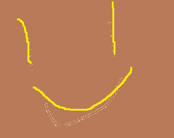

Notable Mobs:
Raging bloodhorn:
This is usually pulled into the first boss.
Raging Tantrum: Pulses AOE damage, can be soothed to stop the cast.
First Boss
An Affront of Challengers
So this boss consists of 3 different minibosses,
Sathel the Accursed, Dessia the Decapitator and Paceran the Virulent.
The usual strategy is to focus down the casters first so the prio would be, Sathel -> Paceran -> Dessia.
Sathel the Accursed:
Necromantic Bolt: Single target bolt spell, should be kicked.
Withering Touch: DoT that can be magic dispelled.
Searing Death: Sathel casts this at 100 energy,
Paceran the Virulent:
Decaying Breath Frontal.
Noxious Spores: Spawns swirlies and zones at 100 energy.
Dessia the Decapitator:
Mortal Strike: Tankbuster that leaves healing reduced debuff.
Mortal Smash: Dessia casts this at 100 energy, big aoe nuke that leaves slow debuff.
Before Xav the Fallen
Notable Mobs:
Shambling Arbalist:
Archer that fires random arrows at players.
Jagged Quarrel: Fires a bleed at a random player.
Dokigg the Brutalizer:
First miniboss of the area that trucks the tank.
Savage Flurry: Flurry of ST-damage on the tank, is kiteable.
Earthcrush: Aoe nuke.
Harugia/Heavin:
Another miniboss, which one spawns depends on when you arrive.
Ricochet: Both have an ability that ricochets in a circle around target, move away from targeted player.
Ancient Captain:
The captain itself isn't scary but the arbalests with him that he buffs.
Focus down the captain to get rid of the buff, then finish the arbalests.
Advent Nevermore:
Last miniboss of the area, can also be the next miniboss instead which is scarier.
Ricocheting Blade:Same Ability as the miniboss before, can be scary when combined with the next move but CAN be LoS'd.
Seismic Stomp: Aoe nuke.
Rek the Hardened:
If Advent doesn't spawn you will get this stinker instead.
Swift Strikes: This buffs Rek giving him more attack-speed and making his attacks cleave onto 2 secondary targets.
Unbalancing Blow: Big Tankbuster that makes the tank unable to block, dodge or parry for 8 seconds.
Seismic Stomp: Aoe nuke. But this version is scarier because you can't LoS Rek's bonus damage like you can with Advent's Ricocheting Blade.
Xav the Fallen
Xav the Fallen
This boss can be quite troublesome if you don't stay on top of his mechanics and can't meet the damage checks.
Brutal Combo: A very heavy-hitting tank combo.
Oppressive Banner: Xav summons a banner that pulses a stacking movement speed slowing debuff to all players. This NEEDS to die fast or next mechanic becomes very punishing.
Might of Maldraxxus: Xav leaps to the center of the arena, dealing extremely high group damage that everyone needs to be topped for.
He then performs 3 types of frontals, a line forward, a half circle and then a full circle which need to be dodged. Doing these dodges with stacks of slows can be difficult w/o movement abilities.
Blood and Glory: Xav sends down 2 players that duel eachother. Because he will soon spawn a banner up top, the best way to handle this is for one person to let the other person win.
The winner of the duel get a damage amp and the loser gets a damage reduction, try to determine the winner by who was CDs up.
Before Kul'Tharok
Notable Mobs:
First theres a long corridor of casters, run to the end and then LoS them to group.
Shackled Soul:
Caster with one cast.
Bind Soul: Channels damage on one player and slows them.Cycle CC and AoE stops.
Portal Guardian:
Mob with uninterruptable AoE damage and a curse.
Soulstorm:Channels AoE damage.
When the guardian dies he leaves an orb that can be picked up. Putting this orb in either the right/left slot in a portal determines where it takes you.
Furthermore this sheet will cover the mobs present in the left->left->left route with the portals which is currently believed to be easiest.
Soulbinder:
Necrotic Bolt: Single-target bolt, can be kicked.
Necrotic Bolt Volley: Multi-target bolt, must be kicked.
Bone Magus:
Grave Spike: Single-target nuke, not very painful, can be kicked.
Bone Spear: MUCH more dangerous than graves spike, must be kicked.
Darkspeaker:
Spirit Frost: Single-target nuke, not very painful, can be kicked.
Death Winds: Sends out a frontal tornado that can knock you off the platform, avoid this.
Kul'Tharok
Kul'Tharok
This boss has seen a major rework since he was released back in Shadowlands.
Necrotic Bolt: Single-target bolt, can be kicked, will probably need a kick-rotation for it.Death Spiral: Summons swirlies around the room that spawn orbs which rotate around the circumfrance, dodge these.
Well of Darkness: Puts a DoT on 2 players, don't stand near them as this does damage in a small aoe around the player.
Necrotic Eruption: Draws a frontal line through the tank, the rest of the party can dodge this.
Draw Souls: This is his most important cast, EVERYONE will spawn a ghost on them after a time that need to be killed before they reach the boss. Everyone should stack and then burn them down.